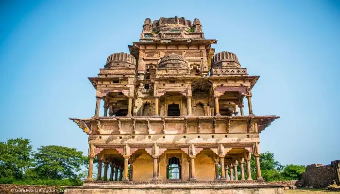

Recommended places to visit 🚗🚆
Gadpahra Fort

An ancient hilltop fort offering scenic views and a glimpse into Sagar’s rich history.
Lakha Banjara Lake

A serene lake in the heart of the city, perfect for relaxation and peaceful evening walks.
Rahatgarh Waterfall

A stunning natural waterfall near Sagar, known for its beauty, especially during monsoon.